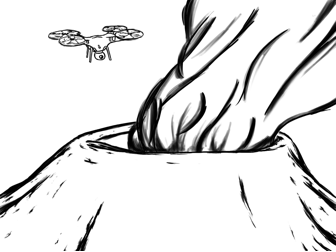

8. A drone is taking footage of a volcanic
eruption. To do this it must stay as stationary as possible.
The drone has a mass of 0.65 kg
and the wind is pushing it with a force of 7.9 N [east].

What forces must the drone’s
propellers exert in order to maintain equilibrium?
A) The propellers must exert a force of 7.9 N
[east] and 0.65 N [up].
B) The propellers must exert a force of 7.9 N
[east] and 6.4 N [up].
C) The propellers must exert a force of 7.9 N
[west] and 0.65 N [up].
D) The propellers must exert a force of 7.9 N
[west] and 6.4 N [up].